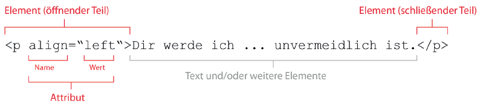

Die Texte werden als XML-Dokument (.xml) gespeichert und bereitgehalten. XML bedeutet „Extensible Markup Language“ und ist eine Auszeichnungssprache, mit der der Inhalt eines Dokumentes beschrieben werden kann. So können beispielsweise Absätze oder unterstrichene Wörter mit sog. Elementen markiert (ausgezeichnet) werden:
<p>Dir werde ich ihn am liebsten bringen wenn er mehr bedarf als die Mutter ihm sein kann u<i>nd</i> die schmerzhafte Trennung doch unvermeidlich ist.</p>
Im genannten Beispiel wird der Text von zwei p-Elementen umgeben, die den darin enthaltenen Text als Absatz („paragraph“) kennzeichnen. Am Anfang steht ein öffnendes Element <p> am Ende ein schließendes: </p> (Schrägstrich beachten). Im so markierten Absatz ist außerdem das Wort „und“ enthalten, dessen zwei letzte Buchstaben kursiv gesetzt werden sollen und daher mit einem (öffnenden und schließenden) i-Element („italic“) markiert wurden.
Elemente können mit sog. Attributen versehen werden, die weitere Informationen zum entsprechenden Element transportieren. So könnte das öffnende p-Element aus dem obigen Beispiel mit einem Attribut versehen sein, das darüber informiert, dass der Absatz linksbündig gesetzt wird. Ein Beispiel:
<p align=“left“>Dir werde ich ... unvermeidlich ist.</p>
Zusammenfassend ergibt sich folgendes Bild eines XML-Elements:
Mehrere Elemente können – wie oben schon gezeigt – ineinander verschachtelt werden. Dadurch entsteht eine hierarchische Baumstruktur, die für XML-Dokumente charakteristisch ist.
Enthalten Elemente keinen Text oder weitere Kind-Elemente handelt es sich um leere Elemente. Sie werden in einer Kurzschreibweise notiert:
| Lange Schreibweise | Kurzschreibweise |
|---|---|
| <pb n=“17v“></pb> | <pb n=“17v“ /> |
Die Bezeichnung leer bezieht sich allerdings nicht auf Attribute. Gerade leere Elemente haben meistens Attribute, die weitere Informationen zum Element in sich tragen (im Codebeispiel wird die Folioangabe dort notiert).